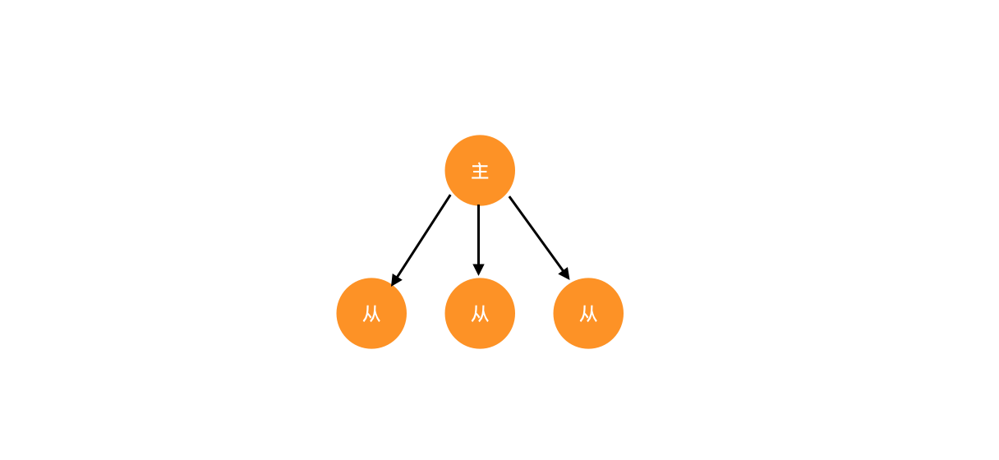
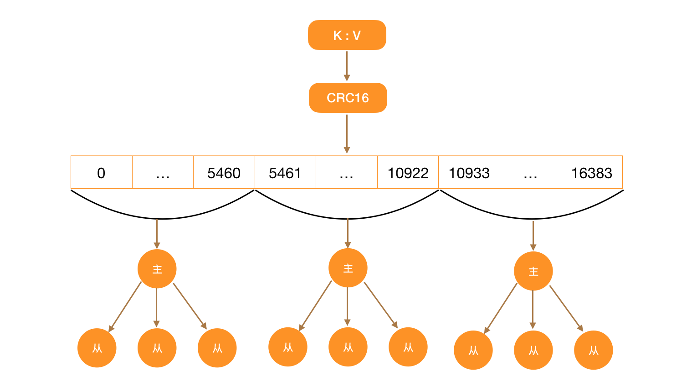

Redis集群是如何运行的
Redis 在线上环境使用的时候，基本不会使用单机，而是会使用多台机器来配合使用，以便提高 Redis 的可靠性。
多机器情况下，Redis 有三种使用方式：
- 主从模式
- 哨兵模式
- 集群模式
但是主从模式和哨兵模式比较适合机器数量比较少的情况，如果机器的数量很多，那么这两种方式就不合适了。
这时候就需要用到集群模式了。Redis 实现集群的关键有两点，主从复制和分片。
主从复制
主从复制是用来保证服务高可用的常见方式，Redis 中的实现也没有特别之处。
Redis 配置主从模式很简单，假设现在有两个节点，10.123.123.100：6379 和 10.123.123.101：6379，将前一台机器设置为主节点，后台一台设置为从节点，只需要执行以下的命令就可以：
10.123.123.101:6379> SLAVEOF 10.123.123.100 6379
主节点和从节点的数据完全一样。从节点在接上主节点时，就会从主节点上开始同步数据，第一次同步时，会复制完整的数据，后续断开重连时，不需要复制完整的数据，只需要复制缺失的那部分。
主节点和从服务器会都会维护一个偏移量，掉线的节点重新连上来之后会把自己的偏移量发送给主节点。然后主节点就会把缺失的那部分数据发给从节点。

主从节点通过心跳检测来判断网络连接状态。
10.123.123.101:6379> REPLCONF ACK offset
其中 offset 是复制的偏移量。
一个 Redis 集群就是有多个这样的主从节点来组成。Redis 在集群状态下，所有写操作都会在主节点上进行，读操作都会在从节点上操作，这样也达到了读写分离的效果。
分片
分片还有一个常见的名称，分表分库，通过一定的算法将 key 放到某个节点之中。
Redis 中将数据的的存储区域分成了 16348 个 slot。每一个 slot 中存放的键值对都不相同，就相当于分表分库。
每个主节点会管理其中一部分 slot，至于 key 会被分配到哪个区域是靠 CRC16 这个算法来实现的。
CRC16 算法用来计算 key 的 CRC-16 校验和。
CRC 的全称是循环冗余检测，通常用于错误检测，CRC-16 表示是16位循环冗余检测算法，类似还有 CRC-8 和 CRC-32 算法
CRC16(key) & 16383
上面函数的结算结果会产生一个 0 - 16383 之间的值，根据值将请求分配到不同的节点进行操作。
当 Redis 主从和 slot 机制组合之后，就会形成如下的结构。

这样的结构下，每个主节点及其从节点中的数据是完全一致的，而不同主节点之间的数据则是完全不同的。
这样的架构设计让 Redis 有很好的弹性，可以自由的扩容和缩容。新的主节点上线之后，就会被分配部分 slot，后续的请求都会转到该节点之上。下线一个主节点之后，该主节点管理的 slot 就会被分配到其他的主节点上。
需要注意的是，Redis 的 16348 个 slot 都必须处在上线状态，整个集群才能对外提供服务，因为 slot 会分配到每一个主节点，如果 Redis 集群中一个主节点及其从节点都挂了，就会导致整个 redis 集群挂掉。
slot 的数量最大为16384，所以一个 Redis 集群中主节点的最大个数是 16384，但每个主节点又可以有多个从节点，这个数量没有限制。